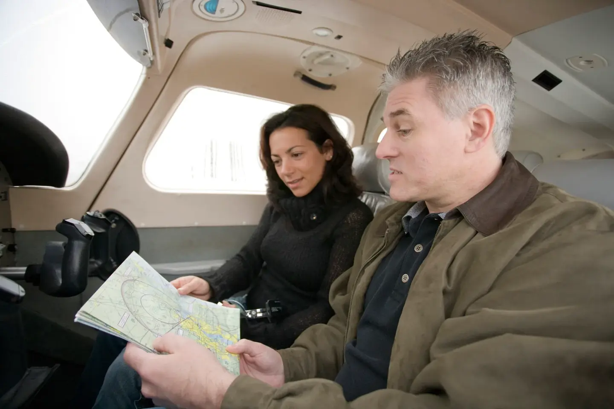

One of the most common questions student pilots ask their flight instructors is, "How do I know when I'm actually ready for my checkride?"
It's a fair question. You've spent months studying regulations, practicing maneuvers, planning cross-country flights, and working toward your private pilot certificate. But as your checkride gets closer, you might find yourself second-guessing how much you really know.
The reality is that very few applicants walk into their checkride feeling completely prepared. There's always another regulation to review, another weather product to study, or another maneuver you wish you could perform a little better.
Being ready doesn't mean being perfect. It means having the knowledge, skills, and judgment necessary to safely exercise the privileges of a private pilot certificate without an instructor sitting next to you.
Here are seven signs that you're getting there.
1. You Understand the Material Instead of Just Memorizing It
There's a significant difference between memorizing an answer and actually understanding it.
For example, most student pilots can memorize the VFR weather minimums for Class E airspace below 10,000 feet MSL. But can you explain why those minimums exist? Can you apply them to a cross-country flight where the weather is gradually deteriorating?
During your oral examination, your designated pilot examiner (DPE) will likely present you with scenarios that require you to apply what you've learned throughout your training.
Memorized answers might get you through the initial question, but they often fall apart when the examiner starts asking follow-up questions.
As you're studying, challenge yourself to explain concepts in your own words. Ask yourself why a regulation exists, how an aircraft system works, and how that information affects the decisions you make as pilot in command.
If you can have a conversation about aviation rather than simply recite answers from a study guide, you're heading in the right direction.
2. You Can Independently Determine Whether an Aircraft Is Airworthy
Let's say you arrive at the airport for your checkride and discover that your aircraft's landing light isn't working.
Can you still fly?
Your answer should involve more than whether the landing light is required for daytime VFR flight. You'll need to consider the aircraft's certification requirements, applicable regulations, equipment lists, airworthiness directives, and the proper procedures for addressing inoperative equipment.
Aircraft airworthiness is an area where many applicants struggle because it requires pulling information from several different sources.
Before your checkride, spend some time reviewing your actual aircraft's maintenance records. Locate its most recent annual inspection, determine whether a 100-hour inspection applies, and familiarize yourself with how airworthiness directive compliance is documented.
You should also be comfortable navigating your aircraft's POH and understanding the process outlined in 14 CFR 91.213.
Once you earn your private pilot certificate, determining whether an aircraft is safe and legal to fly becomes part of your responsibility as pilot in command. Your instructor won't always be there to make that decision for you.
3. You Can Make Your Own Weather Decisions
Weather is one of the most important subjects you'll encounter during your private pilot checkride, and for good reason.
Being able to decode a METAR or TAF is a necessary skill, but it doesn't necessarily mean you're prepared to make a safe weather decision.
Imagine planning a cross-country flight on a day when the weather is technically VFR, but ceilings are gradually lowering, visibility is decreasing, and stronger winds are forecast near your destination.
Would you still go? Would you delay your departure? What would cause you to divert once you're airborne?
These are the types of questions you should be asking yourself during your training.
A well-prepared applicant understands the limitations of weather forecasts, recognizes developing hazards, and establishes realistic personal minimums based on experience and proficiency.
One exercise we recommend is reviewing the weather every morning, even on days when you're not scheduled to fly. Pick a destination, evaluate the conditions, and decide whether you would be comfortable making the flight.
Over time, you'll become more comfortable interpreting weather information and recognizing patterns that might affect your flight.
And remember, there's nothing wrong with canceling a flight simply because you're uncomfortable with the conditions.
Legal weather minimums are not necessarily your personal weather minimums.
4. You Know the Aircraft You're Flying
When was the last time you sat down and read through your aircraft's Pilot's Operating Handbook?
Many student pilots become comfortable operating their training aircraft without fully understanding what's happening behind the instrument panel or underneath the cowling.
You might know how to complete an engine run-up, but can you explain what you're actually checking when you switch between magnetos?
You might know how to turn on pitot heat, but do you understand how a blocked pitot tube could affect your airspeed indications?
Before your checkride, make sure you're comfortable discussing your aircraft's:
- Engine and ignition system
- Fuel system
- Electrical system
- Pitot-static system
- Flight instruments and avionics
- Flight controls
- Operating limitations
- Emergency procedures
Focus on your specific aircraft rather than relying entirely on generic training videos or study guides. Two aircraft of the same make and model can have different avionics, equipment, or approved modifications.
You don't need to become an aircraft mechanic, but you should understand your aircraft well enough to recognize abnormal indications and respond appropriately when something goes wrong.
5. You Can Explain the Decisions Behind Your Cross-Country Flight Plan
For many applicants, cross-country planning is one of the more time-consuming parts of checkride preparation.
Whether you're using an electronic flight bag or traditional navigation logs, the important thing is that you understand how your flight plan was developed.
Why did you select that cruising altitude? Why did you choose that particular route? How much fuel do you expect to have remaining when you land?
If your examiner changes one of the conditions in your scenario, you should be able to explain how that change affects your flight.
For example, what happens if the winds aloft are significantly different from what you planned? What if your destination airport closes while you're en route? What if you encounter weather that prevents you from maintaining your planned altitude?
Your flight plan is based on a series of assumptions, and those assumptions can change once you're airborne.
Spend time practicing diversions, reviewing aircraft performance charts, and calculating fuel requirements under different conditions. Make sure you understand how density altitude, aircraft weight, and environmental conditions affect aircraft performance.
Technology is an excellent resource, and there's nothing wrong with using it during your training. However, you should understand the information it's giving you rather than blindly accepting the numbers on your screen.
6. Your Flying Is Consistent, Even When Things Don't Go Perfectly
It's easy to feel confident after a lesson where every landing is smooth and every maneuver is within standards.
But what happens when you're having an off day?
Consistency is one of the biggest indicators of checkride readiness. You should be able to perform the required maneuvers within the applicable Airman Certification Standards without needing constant reminders or corrections from your instructor.
That doesn't mean every steep turn needs to be flawless or every landing needs to be exceptionally smooth.
What matters is whether you recognize deviations, take appropriate corrective action, maintain situational awareness, and continue operating safely.
If you're approaching the runway and realize your approach is unstable, are you willing to initiate a go-around without waiting for your instructor to tell you?
If you notice yourself losing altitude during a maneuver, can you recognize and correct the deviation?
Your examiner is evaluating your ability to operate an aircraft safely, including your ability to recognize and manage mistakes.
One of the most valuable things you can do before your checkride is complete a full practice practical test with another flight instructor. Flying with someone unfamiliar can help you identify habits, weaknesses, and areas where you've become overly dependent on your primary instructor.
7. You're Comfortable Admitting When You Don't Know Something
A common mistake during the oral examination is trying to answer a question that you don't actually know the answer to.
Nervousness can make applicants feel like they need to respond immediately, even when they're uncertain.
In aviation, guessing can have serious consequences. Knowing when to consult a reliable resource is an important skill.
You should be familiar with resources such as:
- Federal Aviation Regulations
- Aeronautical Information Manual (AIM)
- Pilot's Handbook of Aeronautical Knowledge (PHAK)
- Airplane Flying Handbook
- Your aircraft's POH or AFM
- Private Pilot Airman Certification Standards
Of course, there are certain things you'll need to know without looking them up, particularly information essential to immediate flight safety.
You shouldn't need to search through your aircraft's POH to figure out your immediate response to an engine failure shortly after takeoff.
For other questions, however, knowing where to find the correct information and demonstrating that you can interpret it properly is a valuable skill.
Practice using your aviation resources throughout training so that navigating them feels natural on checkride day.
How Long Should You Spend Preparing for Your Checkride?
There isn't a universal timeline for checkride preparation.
Some students reach the end of their flight training with a strong understanding of ground knowledge and only need a few dedicated review sessions. Others may be proficient in the aircraft but require additional time to prepare for the oral examination.
Ideally, checkride preparation should begin long before your checkride is scheduled.
Reviewing ground knowledge throughout your flight training makes the process much more manageable than trying to relearn everything during the final week.
As your checkride approaches, use the Airman Certification Standards as your guide. Work through each applicable task and identify the areas where you feel least confident.
It's tempting to spend most of your study time reviewing subjects you're already comfortable with. Instead, prioritize the topics you tend to avoid. Those are often the areas where additional preparation will make the biggest difference.
Should You Complete a Mock Oral Before Your Checkride?
If you've never experienced a realistic checkride-style oral examination, completing a mock oral can be particularly beneficial.
Studying independently and answering questions in front of an instructor are two very different experiences.
A mock oral gives you an opportunity to practice explaining your knowledge, working through unfamiliar scenarios, and responding to follow-up questions in an environment where mistakes are part of the learning process.
It can also help identify gaps that might otherwise go unnoticed during your regular ground lessons.
At Apex Aviation, our one-on-one mock oral examinations are designed around the applicable FAA Airman Certification Standards. Rather than simply working through a list of memorized questions, we focus on realistic scenarios and the practical application of aeronautical knowledge.
You'll receive personalized feedback and a better understanding of which areas deserve additional attention before your practical test.
Preparing for Your Private Pilot Checkride with Apex Aviation
Earning your private pilot certificate is a significant accomplishment. By the time you've reached the checkride stage, you've already invested countless hours into developing the skills necessary to become a pilot.
It's completely normal to feel nervous about your practical test. In fact, feeling nervous doesn't necessarily mean you're unprepared.
Focus on understanding the material, practicing consistently, and developing confidence in your own decision-making.
If you're approaching your private pilot checkride and aren't sure where to focus your remaining study time, Apex Aviation offers dedicated checkride preparation resources through our Apex Advantage program.
Our Private Pilot Checkride Prep Pack includes scenario-based preparation resources designed to help you develop a deeper understanding of the material. We also offer personalized, one-on-one mock oral examinations and ground instruction for students who want additional support.
Whether your checkride is next week or you're still several months away, building good study habits now can make a meaningful difference when test day arrives.
Visit apexaviationtx.com to explore our checkride preparation resources and take the next step toward earning your private pilot certificate.
Ready to put these signs into practice? Review the Private Pilot Checkride Prep Pack, book a one-on-one Mock Oral, or start with our free Private Pilot Checkride Readiness Assessment to see exactly where you stand.
This article is for general educational purposes and does not replace instruction from a certificated flight instructor or guidance from your designated pilot examiner.